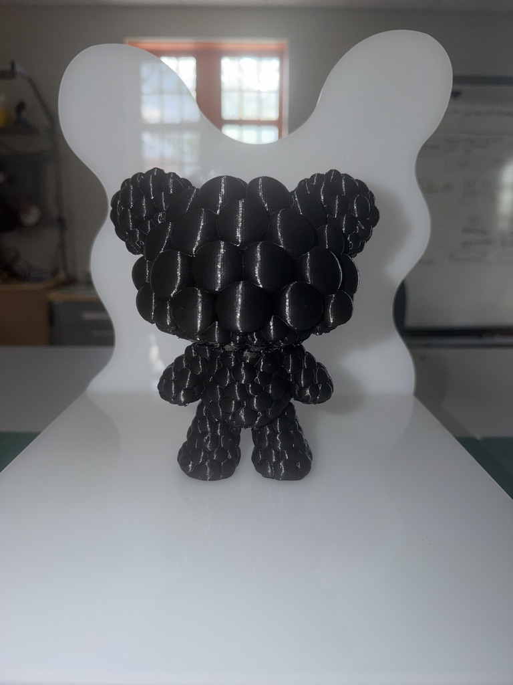
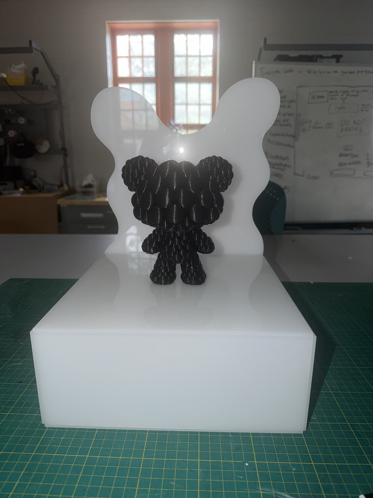
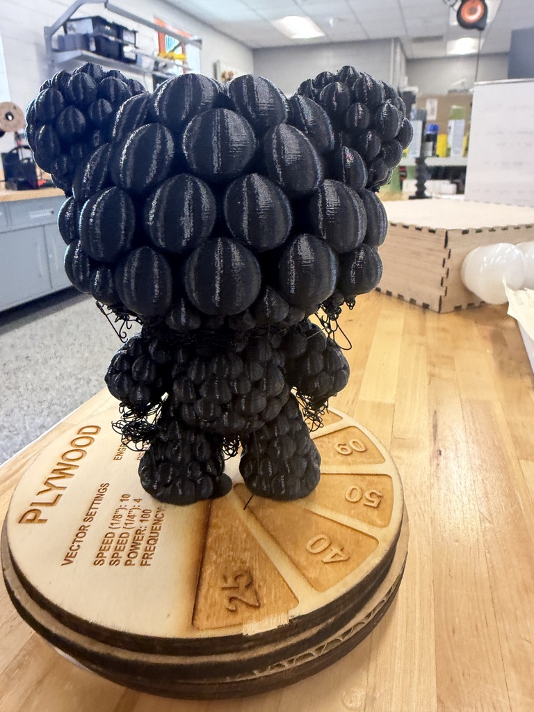

Project Name: Creative Design Project (tbd)
My project is a collection of toy characters inspired
by the evil eye and represented through color,
intentional display and Sanskrit names and the positive
values they represent. Each character embodies a
different intention, one being peace and prosperity,
another growth and connection, and lastly spirituality
and wisdom. The character itself also draws inspiration
from the symbolism of the evil eye, a protective force
associated with guarding one’s energy and reflecting
negativity away. Together, these characters are meant
to be playful art but deeply meaningful, serving as
reminders of love, protection, and inner light. In a
world that can often feel heavy with division and
negativity, this work is rooted in the belief that the
only thing more powerful than hate is love, and that
choosing positivity, compassion, and spiritual
resilience is a powerful act in itself.


